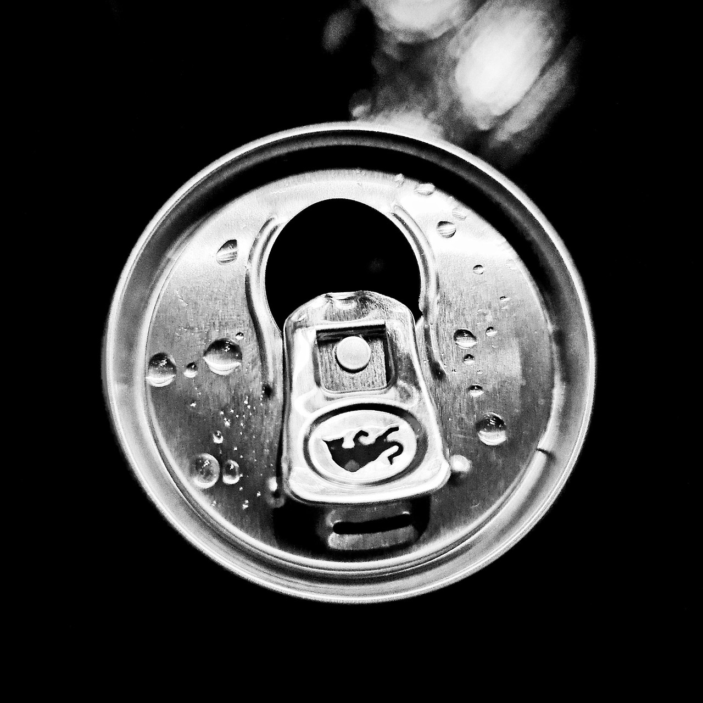
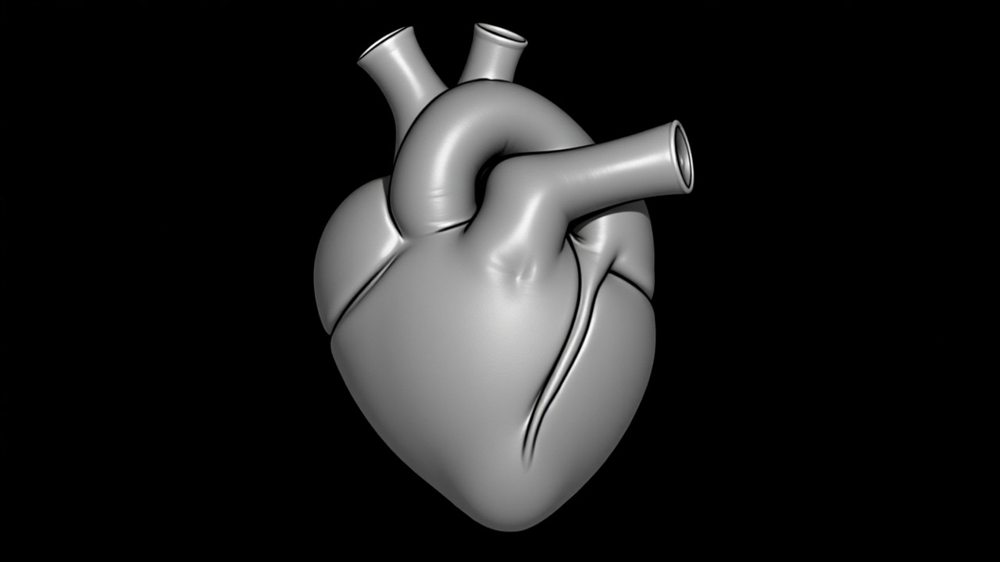
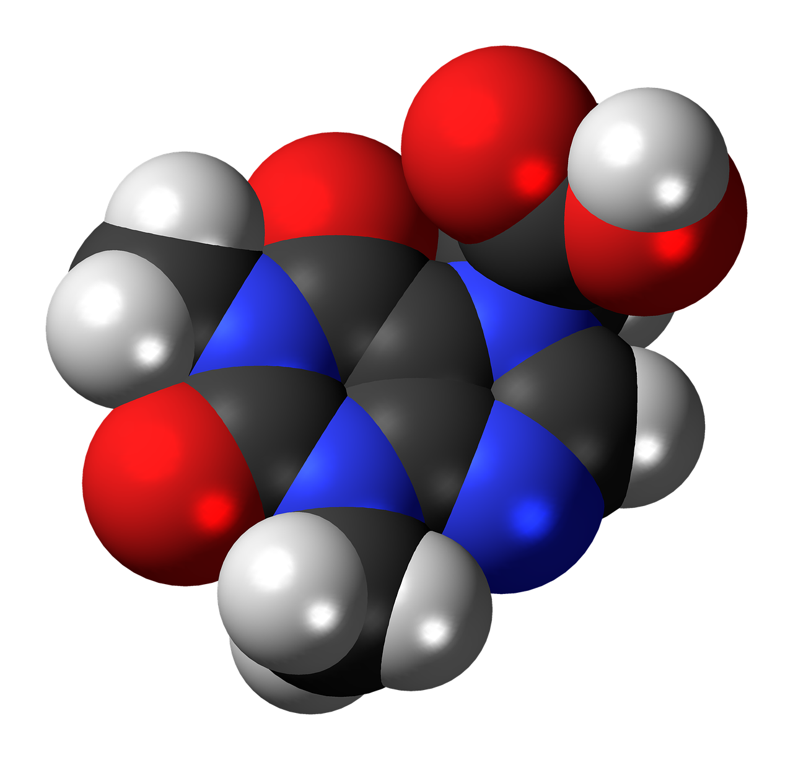

PACIENTE
M.
IDADE
36 anos
SEXO
masculino

ELETROCARDIOGRAMA
ECG · atividade elétrica do coração
ECOCARDIOGRAMA
ultrassom do coração


FRAÇÃO DE EJEÇÃO
6 meses de abstinência total
0
%
NORMAL
internação
0%
100%
INSCREVA-SE
para mais relatórios clínicos
CASO ILUSTRATIVO
relatório clínico
BLOQUEIO DE RAMO DIREITO
o sinal elétrico chega atrasado ao lado direito
EXTRASSÍSTOLES VENTRICULARES
batimentos extras, fora de hora, vindos dos ventrículos
REALCE TARDIO DIFUSO
lesão espalhada pelo músculo do coração (miocárdio)
padrão NÃO isquêmico: não foi infarto
DIAGNÓSTICO
CARDIOMIOPATIA DILATADA TÓXICA
o músculo do coração dilatou e ficou fraco
induzida por estimulantes
3 LITROS / DIA
de energético
DURANTE 2 ANOS
QUEIXA PRINCIPAL
PALPITAÇÕES
coração disparado
DISPNEIA
falta de ar aos mínimos esforços
DOR TORÁCICA NOTURNA
dor no peito à noite
RESSONÂNCIA CARDÍACA
EXAME TOXICOLÓGICO
CAFEÍNA
muito acima do normal
TRATAMENTO
INTERNAÇÃO EM UTI
SUPORTE INOTRÓPICO · remédio que reforça a batida
BETABLOQUEADOR EM ALTA DOSE
DESMAME RIGOROSO
ARRITMIAS CONTROLADAS
O CORAÇÃO SE RECUPERA
se a agressão parar a tempo
CONHECE ALGUÉM QUE EXAGERA NO ENERGÉTICO?
MANDE ESTE VÍDEO